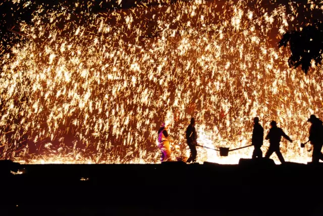
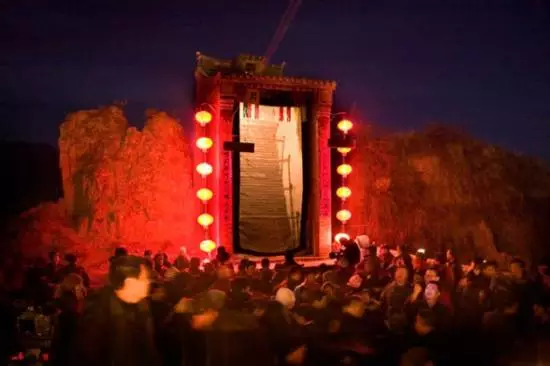
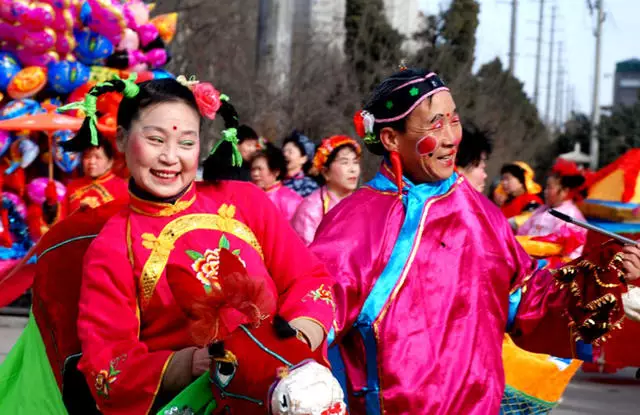

Yuxian paper cutting
-- the extreme of Chinese paper knife work
Yu county paper-cut is currently the only one is given priority to with Yin, heavy color dot of paper-cut art form, after hundreds of years of development, in several creative skilled artists, today's Yu county paper-cut presents the prosperity, and in the joint intangible cultural heritage masterpiece list, by the attention of the world.
Yuxian dozen tree flowers
-- flowers like a brocade

With a history of more than 500 years, it is poured with molten iron on the ancient city wall, forming thousands of sparks. It is called "tree flowers" because it is like a leafy tree canopy. Later, the custom of "beating tree flowers" during the Lantern Festival has been continued to this day.
Lantern mountain
-- through the glory of history>

Yu county Su Zhuang worship lamp mountain folk activities, since the Ming dynasty jiajing years, more than 450 years of history, it comes with folk sacrifice activities, into the connotation of folk culture, improve its unique form, formed the procedural characteristics of folk customs, and absorbing the folk fire and folk opera art nutrition, formed the diversity characteristics of folk culture. As an ancient folk culture of the Han nationality, the basic contents of the activities include four parts: Lantern Mountain, Lantern Mountain, playing Shehuo and singing opera.
Yuxian Yangko
-- from the folk flying out of the golden phoenix

Yuxian Yangko was produced in the late Ming and early Qing dynasties, and in the reign of Kangxi, it formed its own drama, music, performance, singing and other contents. Yuxian Yangko, also known as Yuzhou Wooden Clappers, originated from the folk, developed from the field minor tune and folk song, and absorbed a large number of ancient opera sounds spread in the northern region in the early stage, forming a relatively complete Bangzi opera. Yuxian Yangko highlights its own characteristics with its clever combination of "dialect vernacular" and the plate style and "training" repertoire.